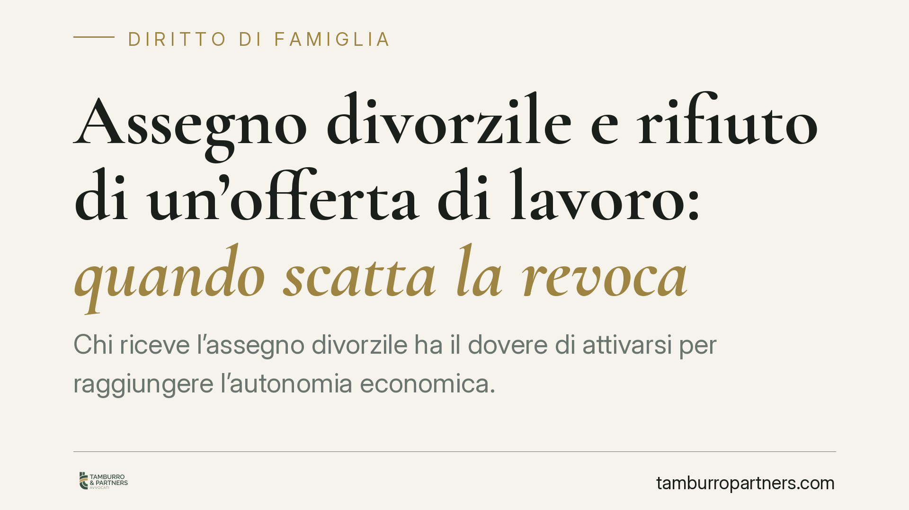

Assegno divorzile e rifiuto di un'offerta di lavoro: quando scatta la revoca
Chi riceve l'assegno divorzile ha il dovere di attivarsi per raggiungere l'autonomia economica. Un orientamento consolidato della Cassazione riconosce che il rifiuto ingiustificato di un'offerta di lavoro concreta e retribuita può rappresentare un giustificato motivo per rivedere, o revocare, l'assegno. Vediamo il quadro normativo e le implicazioni pratiche per beneficiario ed ex coniuge obbligato.

Il quadro: revisione e revoca dell'assegno
L'assegno divorzile non è una statuizione immutabile. L'art. 9 della L. 898/1970 consente a ciascun ex coniuge di chiedere al giudice la revisione delle condizioni economiche del divorzio quando sopravvengono giustificati motivi: circostanze nuove, successive alla sentenza, che alterano l'equilibrio patrimoniale posto a base della decisione originaria.
La revisione può portare a un aumento, a una riduzione o, nei casi più netti, alla revoca dell'assegno. Non basta però un mutamento qualsiasi: deve trattarsi di una modifica reale, apprezzabile e non transitoria della situazione di fatto valutata a suo tempo dal giudice.
La natura dell'assegno secondo le Sezioni Unite
Per comprendere perché il rifiuto di un lavoro possa incidere, occorre ricordare la funzione dell'assegno. Le Sezioni Unite (Cass. SU n. 18287/2018) hanno chiarito che l'assegno divorzile ha natura composita: assistenziale, ma anche perequativo-compensativa. Non serve a garantire il tenore di vita goduto durante il matrimonio, bensì a riequilibrare uno squilibrio economico che sia effettiva conseguenza delle scelte condivise dalla coppia.
Da questa impostazione discende un principio pratico rilevante: il beneficiario non è titolare di una rendita passiva. Su di lui grava un onere di attivazione, cioè il dovere di adoperarsi concretamente per costruire, per quanto possibile, la propria indipendenza economica. È un orientamento oggi consolidato nella giurisprudenza di legittimità.
Quando il rifiuto di un lavoro rileva
Secondo questo indirizzo, il rifiuto ingiustificato di un'offerta di lavoro può costituire un giustificato motivo sopravvenuto ai sensi dell'art. 9. Ma non ogni proposta produce questo effetto. L'offerta rifiutata deve presentare tre caratteristiche:
- concreta: una proposta reale e verificabile, non una generica astratta possibilità di impiego;
- adeguata: coerente con l'età, la formazione, le competenze e le condizioni di salute del beneficiario;
- retribuita: idonea a incidere in modo apprezzabile sulla sua condizione economica.
Se ricorrono questi presupposti e il rifiuto risulta privo di una motivazione plausibile, il giudice può ritenere venuto meno il presupposto assistenziale dell'assegno, riducendolo o revocandolo.
Il rilievo dell'onere della prova
Il punto decisivo, nella pratica, è probatorio. Chi chiede la revoca — di norma l'ex coniuge obbligato — deve dimostrare due elementi: che è esistita un'offerta con i requisiti indicati e che il rifiuto è stato ingiustificato.
Dal lato opposto, il beneficiario che intenda conservare l'assegno ha interesse a documentare le ragioni oggettive del rifiuto: incompatibilità della sede, retribuzione irrisoria, condizioni di salute, carichi di cura, inadeguatezza rispetto al proprio profilo professionale. La differenza tra una rinuncia legittima e un rifiuto pretestuoso si gioca quasi sempre sulla documentazione prodotta in giudizio.
Implicazioni pratiche
Per l'ex coniuge obbligato, la vicenda conferma che l'assegno può essere messo in discussione quando la controparte non compie sforzi ragionevoli verso l'autosufficienza. Per il beneficiario, è un richiamo alla responsabilità: l'inerzia non è tutelata, ma le scelte fondate su ragioni serie e provate restano legittime.
È bene ricordare che la valutazione è sempre concreta e individuale. Non esistono automatismi: il giudice pondera l'intera situazione economica e personale delle parti, senza trasformare un singolo episodio in una regola rigida.
Cosa fare in concreto
- Conservate ogni traccia documentale: proposte di lavoro ricevute, comunicazioni, curricula inviati, esiti dei colloqui.
- Motivate per iscritto un eventuale rifiuto, indicando le ragioni oggettive (sede, retribuzione, salute, carichi familiari).
- Verificate i tre requisiti dell'offerta — concreta, adeguata, retribuita — prima di attribuirle rilievo giuridico.
- Ricostruite l'evoluzione economica intervenuta dopo il divorzio, elemento centrale in ogni giudizio di revisione.
- È opportuno un esame preliminare della posizione, e della relativa documentazione, prima di avviare o affrontare un giudizio di revisione dell'assegno.
Contributo informativo a cura di Tamburro & Partners Avvocati. Non costituisce parere legale.
Ogni famiglia ha il suo equilibrio.
Separazione, divorzio, affidamento, assegno: se vuoi un confronto riservato su una specifica situazione, scrivi allo studio. Ti rispondiamo entro un giorno lavorativo.